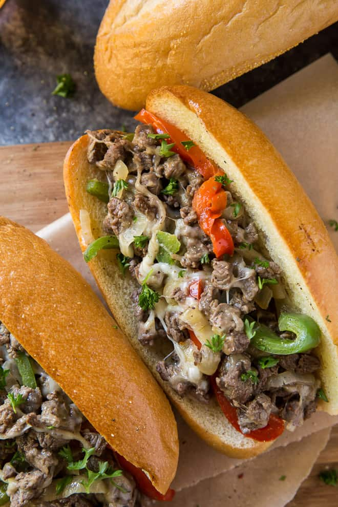

- 4 tablespoons vegetable oil, divided (or as needed)
- 1 sweet yellow onion, halved and thinly sliced (2-inch slices)
- 1 red bell pepper, thinly sliced
- 1 green bell pepper, thinly sliced
- 2½ to 3 pounds petite sirloin, thinly sliced sirloin
- 1 teaspoon Lawry’s Seasoned Salt, or other all-purpose seasoning, divided
- 1 teaspoon garlic pepper, divided
- 8 hoagie rolls
- 6 tablespoons softened butter
- 7 ounces sliced Provolone cheese, (7 1-ounce slices) I used Tillamook Farmstyle Thick Cut